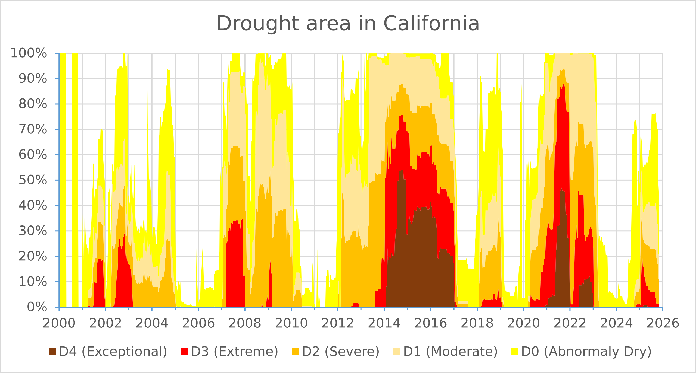

U.S. Drought Monitor’s California assessment. Source: Wikipedia. We’ll talk about stacked area charts in this week’s lecture and you’ll recreate this viz during lab session.
Pre-class Prep
A. Install required packages
install.packages("usethis") # for editing .Renviron (see step C. in pre-class prep)
install.packages("naniar") # tools for exploring & handing missing data
install.packages("tidytuesdayR") # used to download TidyTuesday data
install.packages("tidycensus") # an R package that allows users to interface with a select number of the US Census Bureau’s data APIs and return tidyverse-ready data frames
install.packages("scales") # provides the internal scaling infrastructure used by ggplot2, and gives you tools to override the default breaks, labels, transformations and palettes (installed automatically with {ggplot2} or {tidyverse})B. Download data
Save data to your class repo at EDS-240-class-examples/week3/data/:
| Lecture | Dataset title | Download link | Notes |
|---|---|---|---|
| 3.1 | Lyme Disease Cases by State or Locality | download link (Google Drive backup link, in case CDC portal is unavailable) | Data made available by the CDC (read more on the CDC’s Lyme Disease Surveillance Data page; see other available data under Dashboard data files) |
| 3.1 | US Census Bureau Population Estimates Program | we’ll use the {tidycensus} package to interface with the US Census Bureau’s API and download the data programmatically (see step C, below, for setup instructions), however, in the event that the API is down, you can access a backup copy of the 2019 vintage on Google Drive |
Read more about The Census Bureau’s Population Estimates Program (PEP) |
| 3.2 | USGS National Water Availability Assessment Outputs (CONUS 2025) | download the combined IWA .csv file from the National Water Availability Assessment Data Companion (NWDC) (Google Drive backup link, in case the NWDC is unavailable) | These data are modeled estimates of monthly water supply and use (not empirical measurements from sensors / gauges); Read more about the model & data |
C. Request a US Census Bureau API key & add it to your .Renviron file
To use the
{tidycensus}package to access US Census Bureau data, you’ll first need to request and activate an API key. Do so by following these steps:- Request an API key at http://api.census.gov/data/key_signup.html
- After a short period of time, you should receive an email with your key (it may be helpful to star / bookmark that email), and click the included link to activate your key (Note: if you get an error when activating your key, close your browser window and try clicking the activation link again).
Add your API key to your
.Renvironfile. For security purposes, you should NEVER push any API keys to GitHub. Rather than typing our API key into any of our scripts, we can instead save it to and read it from our.Renvironfile. Follow these steps:- Run
usethis::edit_r_environ()in your Console, which will open up your.Renvironfile (it will create it if you don’t already have one). - Store envrionment variables as key / value pairs. Add your API key as shown, below, then save and restart R for your changes to take effect.
- Run
.Renviron
# be sure to name it exactly as written here (all caps)
CENSUS_API_KEY="XXXXXXXXXXXXXXXXXXXXXXXXXXXXXXXXXXXXXXXX"- Note: You may also consider storing your API key in a password manager for safe keeping (e.g. in case your computer decides to call a quits, is lost, etc.)
What exactly is
.Renviron?
Dotfiles (files which are preceded by a dot, .) are hidden files, which are broadly used to customize the behavior of programs. You may already be familiar with some dotfiles, such as .gitconfig and .gitignore.
The .Renviron file is an R-specific dotfile, which is commonly used for (though not limited to) storing sensitive information, such as API keys. It lives in your computer’s home directory (e.g. /Users/yourUserName on macOS, or C:/Users/yourUserName/Documents on Windows), and is automatically sourced when an R session starts. When sourced, all stored variables (such as your API key) are made available to your R environment for you to use. Variables should be stored as key / value pairs (e.g. KEY_NAME="VALUE". Access them using Sys.getenv("KEY_NAME").
Oftentimes, packages that are built to interface with APIs will include their own helper functions for adding API keys to your .Renviron file (e.g. see tidycensus::census_api_key()). You may choose to use these helper functions in place of usethis::edit_r_environ(), if you prefer.
D. Download .qmd templates & review initial data wrangling code
Download all necessary templates (links in the table below) and save them to a
EDS-240-data-viz-examples/week3/folder.Review the data wrangling code under the
## Setupsection of each template file and make note of any questions you might have. Due to time constraints, we won’t be live-coding our way through the data wrangling code in class. However, we’ll reserve some time to answer any questions before we jump into data viz .
Lecture Materials
| Lecture slides | Code-along template | Code-along key |
|---|---|---|
| Lecture 3.1: visualizing evolution | 3.1 template | 3.1 key |
| Lecture 3.2: visualizing amounts / rankings | 3.2 template | 3.2 key |
Pre-lab Prep
TODO
- recreating USDM plot exercise is currently split into two parts (weeks 2 & 4) – combine into one lab for this week
A. Prepare a week3-lab.qmd file
Add a new blank file to your class repo at the following location: EDS-240-class-examples/week3/week3-lab.qmd. Fill out the necessary YAML information (title, author, date + any other information you find helpful).
Lab Materials
| Lab Slides | Exercise instructions | Exercise solutions |
|---|---|---|
| Lab 3 slides: Alt Text | Lab 3 exercise: writing alt text | Lab 3 solution |
Assignment Reminders
| Assignment Type | Assignment Title | Date Assigned | Date Due |
|---|---|---|---|
| FPM | Final Project Milestone #1 | Wed 01/07/2026 | Wed 01/21/2026, 11:59pm PT |
| HW | Homework #2 | Wed 01/21/2026 | Wed 01/28/2026, 11:59pm PT |